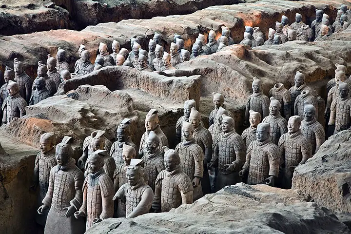
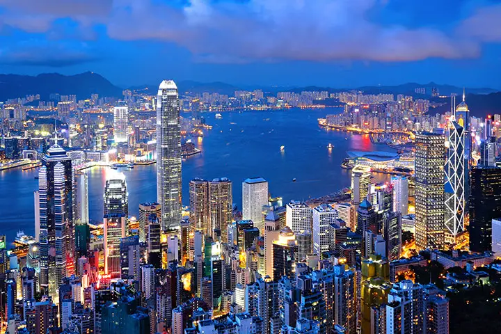
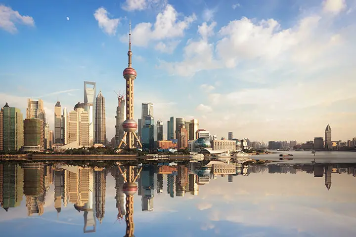

Золотой Треугольник Тур в Китай
Из Пекина в Сиань удобно добираться на высокоскоростном поезде, и это отличная возможность увидеть жизнь Китая изнутри.
Стандартный
$1136 / чел
- Пекин - Сиань - Шанхай
- 3 - звездочный стандартный отель
Улучшенный
$1310 / чел
- Пекин - Сиань - Шанхай
- 4 - звездочный стандартный отель
Делюкс
$1707 / чел
- Пекин - Сиань - Шанхай
- 5 - звездочный стандартный отель

Тур Мегаполисов и Гармония Природы
Который сочетает в себе оглушительный ритм крупнейших мегаполисов Китая и умиротворяющую гармонию традиционных китайских садов, пагоды, арочные мосты!
Стандартный
$3125 / чел
- Шанхай - Сучжоу, Ханчжоу - Хуаньшань - Макао - Гонконг
- 3 - звездочный стандартный отель
Улучшенный
$3299 / чел
- Шанхай - Сучжоу, Ханчжоу - Хуаньшань - Макао - Гонконг
- 4 - звездочный стандартный отель
Делюкс
$3696 / чел
- Шанхай - Сучжоу, Ханчжоу - Хуаньшань - Макао - Гонконг
- 5 - звездочный стандартный отель

Тур Круиз По Реке Янцзы И Панды
Посетите большую панду в Чэнду, поразитесь смешению восточной и западной культуры в Шанхае и отдохните в круизе по реке Янцзы, любуясь потрясающими пейзажами Поднебесной!
Стандартный
$2188 / чел
- Пекин - Сиань - Чэнду - Три Ущелья - Шанхай
- 3 - звездочный стандартный отель
Улучшенный
$2362 / чел
- Пекин - Сиань - Чэнду - Три Ущелья - Шанхай
- 4 - звездочный стандартный отель
Делюкс
$2759 / чел
- Пекин - Сиань - Чэнду - Три Ущелья - Шанхай
- 5 - звездочный стандартный отель